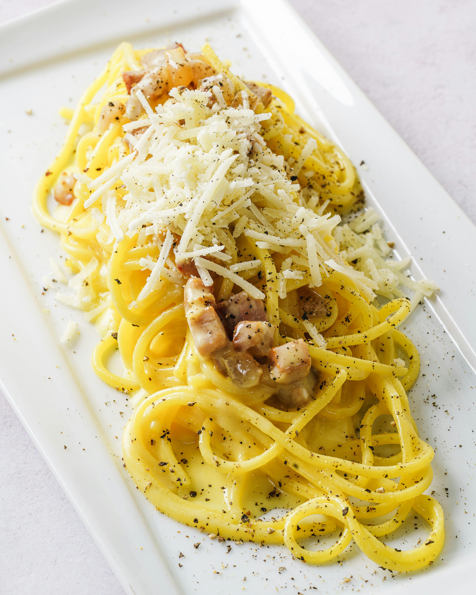

Carbonara

Description
Here's the most viral italian recipe at the moment!
We will teach you to how master its most important bits and underlying
secrets.
Carbonara is a deceptively simple and creamy pasta dish.
Ingredients:
- 200g pasta
- 150g guanciale
- 100g pecorino romano
- 3 egg yolks
- black pepper as needed
Steps:
- Remove the skin and pepper from the guanciale
and dice it.
- Start cooking the diced guanciale at low heat to
render the fat.
- Separate your 3 egg yolks from the egg whites.
- In a bowl, mix the pecorino, the egg yolks and cracked
pepper.
- Once the guanciale is cooked, add the rendered fat into
your egg mixture.
- Cook your pasta al dente, then once it is ready you can start
incorporating your mixture to pasta inside a pan.
Be mindful that
it will need low to no heat. This ensures we don't
scramble the eggs.
- Add the guanciale to your pasta, add some freshly ground
pepper to your liking, sprinkle some more cheese on top and
voilà!
Home